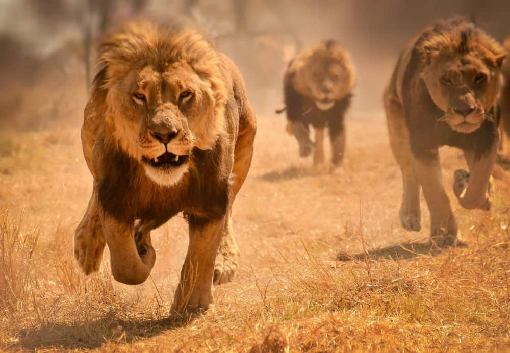

lion, (Panthera leo), large, powerfully built cat (family Felidae) that is second in size only to the tiger. The proverbial “king of beasts,” the lion has been one of the best-known wild animals since earliest times. Lions are most active at night and
live in a variety of habitats but prefer grassland, savanna, dense scrub, and open woodland. Historically, they ranged across much of Europe, Asia, and Africa, but now they are found mainly in parts of Africa south of the Sahara.
An isolated population of about 650 Asiatic lions constitute a slightly smaller race that lives under strict protection in India’s Gir National Park and Wildlife Sanctuary.
Lions are carnivores, this means they like meat
They eat many different kinds of animals, known as prey. Lion can eat a LOT!Male lions will eat an average of 7kgs of food a day and lionesses 4.5kgs. Both are capable of eating up to 15% of their body weight during
just one meal. For a male, that’s the same as 70 cans of cat food! Lions are well known for being greedy and will hunt animals even when they are not hungry. When tucking into a juicy zebra, if another animal comes near, a lion will often
forget about that kill in its eagerness to catch some more food.
Lions can’t run very fast. With a maximum speed of 60 kilometres per hour, compared to a cheetah’s 97kph, they are pretty slow. Plus, they can’t run for very long without getting out of breath. Because of this, lions need to be clever hunters.By
stalking their prey they are able to get as close as possible before the chase begins. Very slowly, crouching near to the ground, lions creep as near to their victims as possible. Making sure they haven’t been seen or heard, they can thenjump
on an animal very quickly, taking it by surprise.
When hunting smaller animals, lions will often ankle-tap their prey. By clipping an animal’s ankle from behind while it is walking or running, the lion aims to trip it up, making it easier to catch. Larger animals are brought to the ground
by jumping on their backs. This is usually when the bigger, stronger male lions decide to join in.
Although lions are able to hunt alone, it can be much easier to have a little help. When hunting in a group, each lion has its own place. Just like in a football team, they will choose to be in either a left, right or centre position. If stalking is too
difficult, a group of lions may decide to ambush their prey instead.
Running very quickly at an animal forces it to run towards other lions, or into bushes, where it will be trapped. Working together like this means that the lions are much more likely to catch their prey. Lions have even been known to climb trees and on
top of unsuspecting elephants as they walk underneath!
Even though lionesses do most of the hunting while the males just sit and watch, once an animal has been caught it’s the males that are always first to feed. Lions are good at working together to catch their prey, but they are terrible at
sharingand will fight over their food. Often smaller, weaker lions go hungry, while the others are first to have their fill. Depending on the size of the kill, they may not get anything at all.

Lions are also scavengers and will happily steal food from other animals, or eat leftovers after a kill. This means than when other carnivores have caught prey, lions will often bully them into giving up their meal.
This doesn’t always work with hyenas though, who also live in a family group called a clan. If there are more hyenas than lions, often they will get to hold on to their food. Even the biggest clan of hyenas is no match for a male lion though.
The King of Jungle always wins!
What Animals Do lions eat?
Antelops
Buffaloes
Zebra
Young Elephants
Rhinos
Hippos
Warthogs
Crocodiles
Giraffes
To name a few...
What Do Lion Cubs Like To Do Best? Play!
Willa, Kya and Uma at play (Photo: Jeff McCurry)“I’m Queen of the World!” (Photo: DJJAM)
“Oh, no you don’t!” (Photo: Jeff McCurry)“I got it!” (Photo: Mark Dumont)
Just like human children, life for a lion cub is all about play, and our 6-month-old lion cubs – Willa, Uma and Kya – love to play!
So much more than just a fun way to pass the time, play also helps little lions develop and grow. By running, climbing and wrestling, they practice their gross motor skills and develop physical strength and coordination.
Play is also enriching for their minds. Mental stimulation triggered by playing with each other and a variety of toys, which could be anything from a ball to a stick to Daddy’s mane, builds big, clever brains.
What types of lion are they?
There are 7 types of lion in the world. They include the following
The Asiatic
This lion is the rearest in the world
The African Lion and Lioness
Katanga Lion (Southwest African Lion
The White Lion
Anyone with a heart for wildlife, especially the lion community would feel their heart breaking for the White Lion and what they must endure.
Masai Lion
The Abyssinian
This lion type is a mystery to science and science is working hard to find the answers to their DNA
10 Facts About Lion
Nearly all wild lions live in Africa, but one small population exists elsewhere…